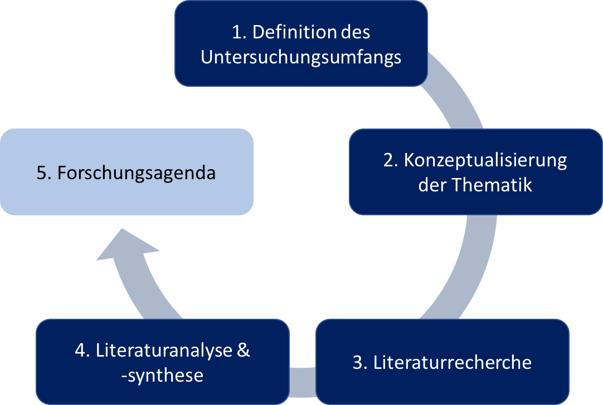

♦ Methodik Literaturanalyse
1.
2.
3.
4.
♦ Methodik Interviews
♦ Ergebnisse
♦ Downloads
♦ Kontakt
Methodisches Vorgehen der vorliegenden Literaturanalyse
Das methodische Vorgehen orientiert sich an dem konzeptionellen, fünfstufigen Leitfaden von vom Brocke et al. (2009) zum Verfassen einer Literaturanalyse. Dieser wurde speziell für Analysen im Bereich des ITSM entwickelt.
Im Rahmen der Masterarbeit dient er als Hilfestellung zur systematischen Beantwortung der beiden Forschungsfragen.
Die Analyse wird dem Leser mit Hilfe dieses Leitfadens Schritt für Schritt nachvollziehbar sein.

Bitte auf die einzelnen Flächen klicken (interaktive Graphik).